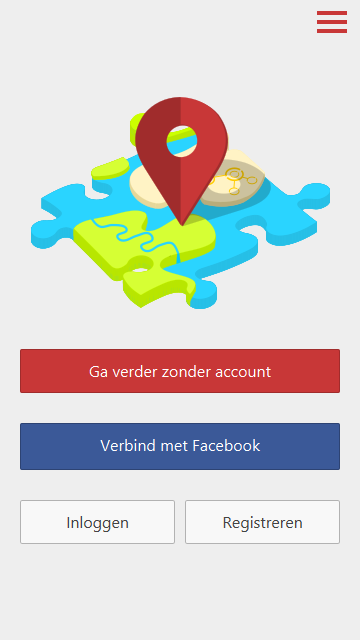
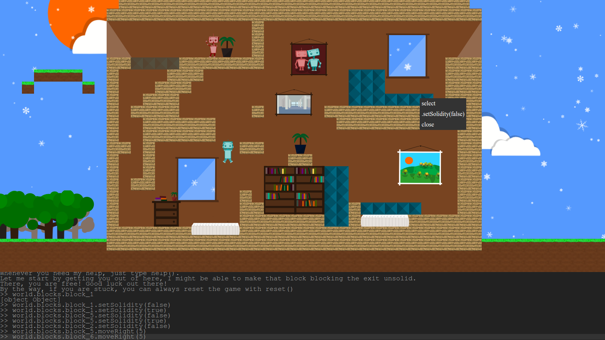
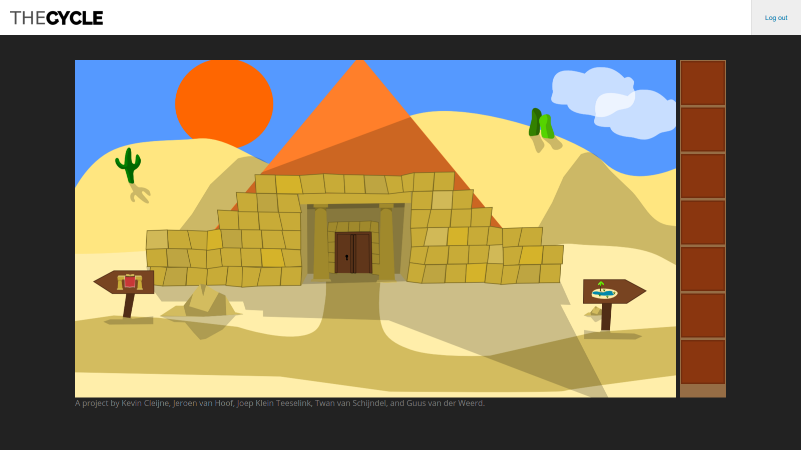

Hello, my name is Jeroen van Hoof. I am a master's student, studying Computer Science and Engineering at the Eindhoven University of Technology and I work as a software developer at Ilysian.
Timeline
March 2016 Started master
Started a master's study of Computer Science & Engineering at the Eindhoven University of Technology .
March 2016 Bachelor's degree
Received Bachelor's degree in Computer Science (Web Science) at the Eindhoven University of Technology.
July 2015 Started work at Ilysian
Started working as software developer at Ilysian.
Nov 2014 – Jan 2015 Student assistent Web Technology
Worked a student assistant for the course Web Technology, where students were taught technologies, languages and frameworks, such as SOAP, REST, HTML5, Javascript, CSS, Bootstrap, AJAX, PHP, NodeJS, Python and Django.
June 2011 Graduated highschool
Finished high school at Willibrord Gymnasium Deurne, in Science & Technology and Health & Nature.
CS Kochsysteme used to be a website which front-end had a lot of problems and had become very hard to maintain.
I have rewritten the front-end from scratch in a maintainable, logical and consistent architecture, fixing the problems and making it responsive along the way.
Unfortunately, I was limited to copying the old design, and in the end, a better design came along.

Travelmatch
Travelmatch, a smartphone/tablet app that creates a TravelDNA based on the liking and disliking of travel images.
The mobile app was built with Cordova, AngularJS and Less and communicated via REST with a Django server.

Jumper
Jumper, a platform game built with Phaser that teaches you how to program.

The Cycle
The Cycle, a point and click game built in HTML5, illustrations are made by me using Inkscape, and I developed a large part of the front-end of the game.